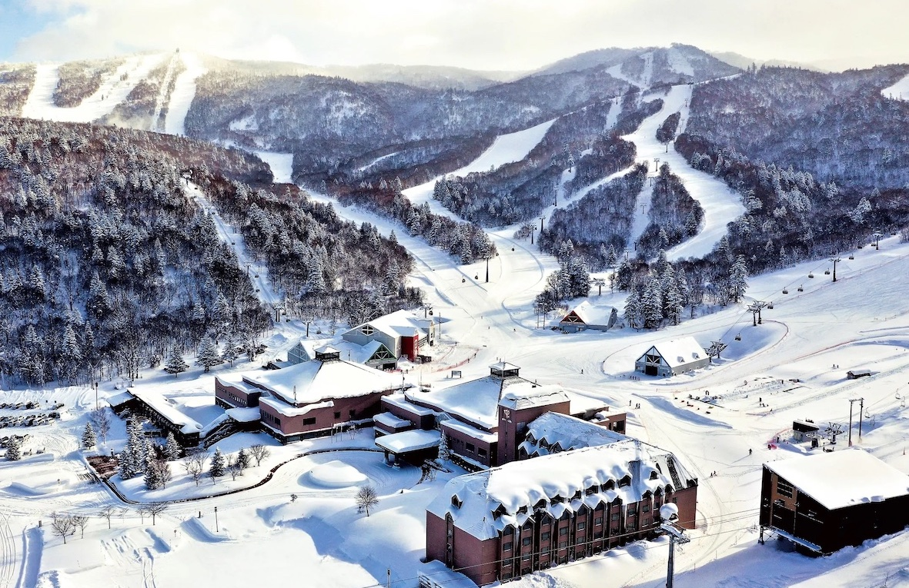
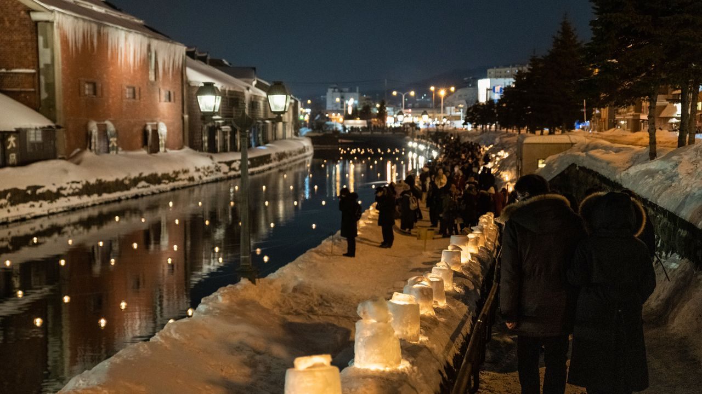
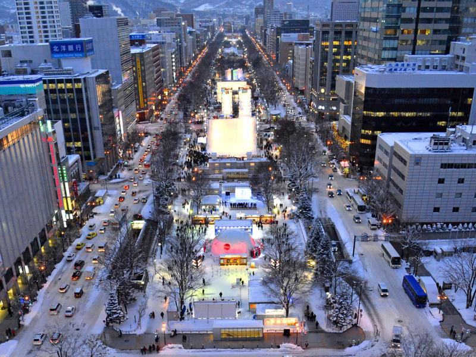

一群好友從台灣、英國、美國出發，齊聚北海道，展開為期 11 天的滑雪與觀光之旅。以小樽為據點，每日搭乘接駁車前往 Kiroro Snow World 享受粉雪，並在札幌與小樽品嚐北海道美食、探索冬日風景。

位於北海道余市郡赤井川村，擁有朝里岳與長峰兩座山峰共 23 條雪道。以優質粉雪聞名，年均降雪量超過 21 公尺，是北海道最佳的滑雪勝地之一。

浪漫的運河之城，以玻璃工藝、音樂盒、壽司與海鮮聞名。冬季覆蓋白雪的運河倉庫群，搭配溫暖的街燈，是北海道最迷人的冬日風景之一。

北海道首府，擁有大通公園、狸小路商店街、二條市場等知名景點。冬季的札幌啤酒園、湯咖哩與味噌拉麵更是不可錯過的美食體驗。
從抵達札幌到離開北海道，完整的 11 天行程安排。
台灣組 (4人)：長榮航空 TPE→CTS 09:30-14:05 (2P/23KG)
hchsu1112：TPE→CTS 08:35-13:10
calee + yahsieh：JAL JL0042 LHR→NRT 08:35-翌日07:25
wangtr：SFO→NRT 19:00-翌日23:00 (前一天出發)
抵達新千歲機場後搭 JR 快速列車至札幌（約 37 分鐘）。
🏨 札幌東橫 Inn（1/2-1/4，兩晚）
🏨 札幌東橫 Inn
calee + yahsieh：HND→CTS 10:00-11:35，抵達後直接前往小樽
其他人：JR 札幌→小樽（約 30 分鐘）
下午小樽觀光：
🏨 OMO5 小樽 by 星野集團（1/4-1/11，七晚）
每日搭乘接駁車從小樽前往 Kiroro Snow World，享受北海道頂級粉雪。
| 日期 | 去程 | 回程 | 備註 |
|---|---|---|---|
| 1/5 (日) | 08:25 | 15:30 | |
| 1/6 (一) | 07:35 | 16:10 | SKI 教練課（如有） |
| 1/7 (二) | 07:35 | 16:10 | SB 教練課 |
| 1/8 (三) | 07:35 | 16:10 | |
| 1/9 (四) | 07:35 | 16:10 | |
| 1/10 (五) | 07:35 | 15:30 |
套票：6 小時纜車券 + 來回接駁車 = ¥7,500/人/日
回到小樽後自由活動，可享受小樽夜景、運河散步、居酒屋等。
最後一天滑雪！前往札幌手稻滑雪場（Sapporo Teine）。
從小樽搭 JR 至手稻站（約 20 分鐘），再轉巴士上山。
手稻滑雪場擁有奧林匹克等級雪道，可同時欣賞石狩灣與札幌市區景色。
hchsu1112：17:30 CTS→TPE 提前離開
🏨 札幌東橫 Inn（1/11-1/12，一晚）
上午札幌自由活動，下午前往機場。
台灣組 (4人)：長榮 CTS→TPE 15:20-19:05
hchsu1112：CTS→TPE 14:40-18:20
calee + yahsieh：CTS→HND 19:30-21:10（之後繼續東京行程）
¥7,500/人/日（6 小時券 + 來回巴士）
小樽 OMO5 出發，車程約 50 分鐘
全套 ¥7,000（OMO5 住客優惠），可單租板/鞋
1 泊 2 日 ¥1,500，之後每日 +¥500
1972 年冬季奧運會場地，分為 Highland Zone（中上級）與 Olympia Zone（初中級）。從山頂可同時眺望石狩灣與札幌市區全景。
交通：JR 小樽→手稻站（約 20 分鐘）→ 巴士上山
查看官網 →| 成員 | 類型 | 租借項目 |
|---|---|---|
| yysung | SKI | SKI 板 |
| calee | SKI | Ski Gear Set (1/9-1/11) |
| hchsu1112 | SKI | SKI 鞋 + 板 |
| hchsu | SKI | SKI 鞋 + 板 |
| yaowen | SB | SB 板 (152cm) |
| yahsieh | SB | SB 鞋 + 板 |
| syujy | SB | SB 板 |
| wangtr | SKI | SKI 板 |
日期：1/7（二）
人數：4 人（yahsieh, syujy, yaowen, calee）
時長：半日
狀態：已預約
經討論後決定不請教練，自行練習。
狀態：不請教練
北海道是日本的美食天堂，從新鮮海鮮到成吉思汗烤羊肉，每一餐都是驚喜。
北稻穗 3-10-16，以超值海鮮丼聞名
堺町 2-18，新鮮海鮮料理
堺町 3-1，人氣迴轉壽司
色内 1-10-7，握壽司名店
花園 1-1-1，老字號握壽司
山田町 2-2，小樽人氣拉麵
入船 4-7-8
稻穗 2-19-14，蕎麥麵名店
色内 1-13-5，和牛燒肉
色内 1-11-10，和牛專門店
山田町 1-1，成吉思汗烤羊肉
堺町 2-3
色内 1-1-17，串燒居酒屋
港町 5-4，運河倉庫群內的啤酒餐廳
稻穗 2-11-2，關東煮名店
堺町 5-22，北海道知名甜點品牌
北海道代表性甜點，必買伴手禮
豐平區中之島 2 條 4-7-28，札幌味噌拉麵名店
札幌人氣拉麵，經常大排長龍
中央區北 4 條西 1，ホクレンビル B1F，札幌湯咖哩代表
1/3 晚餐，calee + yahsieh 的東京組聚餐
已預約免費參觀，11:00-18:00，可試飲經典札幌啤酒
成吉思汗烤羊肉 + 啤酒暢飲的經典組合
明治至大正時代的石造倉庫群沿運河而建，冬季點燈後格外浪漫。推薦傍晚散步，欣賞雪中運河倒影。
小樽最熱鬧的觀光街道，聚集了玻璃工藝品店、音樂盒堂、甜點店等。LeTAO 本店與北一硝子都在此。
創業於 1899 年的老字號酒造，可免費試飲各種日本酒。冬季限定的新酒特別值得品嚐。
位於 JR 小樽站旁的傳統市場，以新鮮海鮮和平價海鮮丼聞名，是早餐的絕佳選擇。
搭乘纜車登上天狗山，可俯瞰小樽市區與石狩灣全景。冬季夜景被譽為北海道三大夜景之一。
日本唯一的啤酒博物館，免費參觀。紅磚建築本身就是明治時代的歷史遺產，付費可體驗啤酒試飲。
札幌最大的商店街，全長約 900 公尺的拱廊商店街，藥妝店、餐廳、伴手禮店應有盡有。
位於大通公園旁的都市型水族館，以企鵝和水母展示聞名，是札幌的新興人氣景點。
北海道最大的神社，新年期間可體驗初詣（新年參拜）。冬季雪景中的神社格外莊嚴。
Nikka Whisky 創業地，可免費參觀威士忌製造過程並試飲。從小樽搭 JR 約 25 分鐘即達。
札幌近郊的溫泉鄉，從札幌市區搭巴士約 60 分鐘。滑雪後泡溫泉是最佳的恢復方式。
日本新三大夜景之一，搭乘纜車登上山頂，可 360 度俯瞰札幌市區燈火。
主要地點與交通路線一覽
從 2024 年 4 月開始，歷經 11 次會議討論，從地點選擇到最終行程確認的完整過程。
確定前往北海道滑雪，比較星野 Tomamu、Kiroro、Niseko、富良野等雪場。初步確定時間為一月初。
投票決定去 Kiroro（彈性高、人少、可兼顧小樽觀光）。確定保底 9 天行程，暫定 1/4-1/12。
決定先滑後玩，滑雪 5-6 天。投票決定小樽住 7 晚（1/4-1/11），提前至 1/2 抵達日本。
最終確認雪場為 Kiroro，1/4 開始入住小樽，住 7 晚。開始尋找小樽飯店。
比較多家小樽飯店（Winkel Village、OMO5、Grand Park 等），考慮 Kiroro 接駁車停靠點。投票選擇飯店。
確定入住 OMO5 小樽。討論機場到札幌交通、札幌到小樽的 JR 列車、途中換雪場的可能性。
確認各人機票。訂 札幌東橫 Inn（1/2-1/4 及 1/11）。開始討論是否請教練。
比較 Kiroro 套票方案，投票選擇 Option 1（¥7,500 含 6hr 纜車 + 來回巴士）。討論第二雪場選項。
詳細研究小樽與札幌餐廳選項。確認 SB 教練 4 人私人課程，SKI 教練詢問中。
確認所有租借裝備、接駁車時刻表。投票最後一天去手稻滑雪場。規劃每日景點與餐廳。完成所有預訂。
| 項目 | 日期 | 路線/地點 | 費用 | 狀態 |
|---|---|---|---|---|
| 機票（台灣組 4 人） | 1/2 | TPE→CTS 長榮 | 30,094 TWD/人 | 已訂 |
| 機票（hchsu1112） | 12/26 | TPE→CTS 酷航 | 18,445 TWD | 已訂 |
| 機票（calee+yahsieh） | 1/2 | LHR→NRT JAL | 850.29 GBP | 已訂 |
| 機票（calee+yahsieh） | 1/4 | HND→CTS | 47,240 JPY | 已訂 |
| OMO5 小樽 | 1/4-1/11 | 小樽 | 68,207 TWD (全員) | 已訂 |
| 東橫 Inn 札幌 | 1/2-1/4 | 札幌 | — | 已訂 |
| 東橫 Inn 札幌 | 1/11-1/12 | 札幌 | — | 待確認 |
| Kiroro 纜車+巴士 | 1/5-1/10 | Kiroro | ¥7,500/人/日 | 已訂 |
| 手稻接駁車+纜車 | 1/11 | Teine | — | 已訂 |
| SB 教練 | 1/7 | Kiroro | — | 已訂 |
Fukushima · Aizu · Nikko · Tokyo
Hokkaido · Kiroro · Otaru · Sapporo
Naeba · Joetsu Kokusai · Echigo-Yuzawa · Tokyo
Austria · Christmas Markets · Alpine Skiing